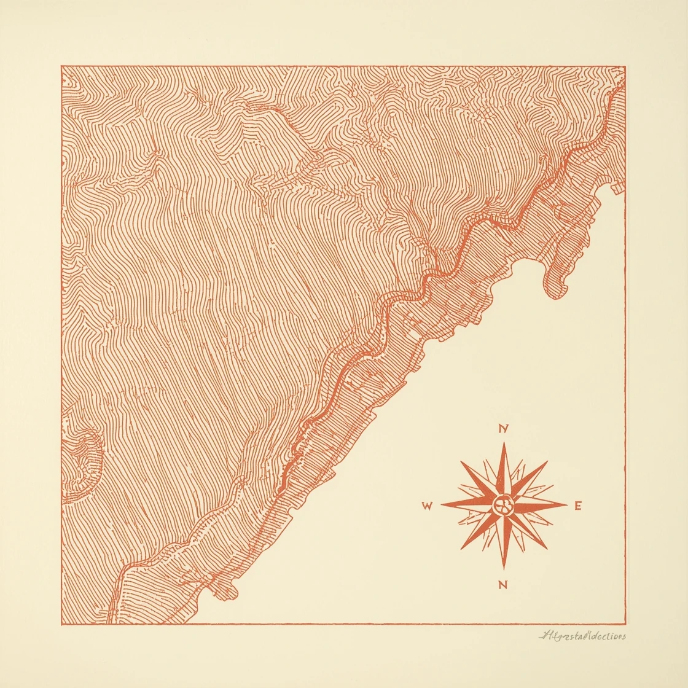

From brief
to byte.
One image. A file you can keep. A workflow you can run again.

Six names.
Six jobs.
- Fungi
- Apps, agents and Computers
- Oyster
- Hosts the Apps and checks access
- Prints
- Tracks the job and saves the original
- Workers
- Runs your application code
- Workers AI
- Runs the model
- AI Gateway
- Observes and controls routed requests
Start on your laptop.
Try the same brief in two formats. The Worker runs locally and returns a fixture.
curl -fsS 'http://127.0.0.1:8788/api/brief?format=feed'
curl -fsS 'http://127.0.0.1:8788/api/brief?format=link'Show the mode and zero-inference counter. Setup is in the kit README.
Show the request.
Send one fictional caption through your own AI Gateway. Find its model, duration and status in Analytics or Logs.
node gateway.mjs
node gateway.mjs --liveThe second command uses your account and can incur charges. A fixture is evidence of the rehearsal. A dashboard request proves live routing.
Everyone gets a start.
- Today
- Public kit, poster brief and local Worker
- Next
- Local Oyster and a read-only MCP check
- When ready
- Your Cloudflare account, permissions and budget
The full Cloudflare Oyster host needs Workers Paid. Hosted Fungi access follows its own prerequisites.
Make one thing.
Keep the original.
Choose an idea, run a workflow you understand, and save what lets you repeat it.